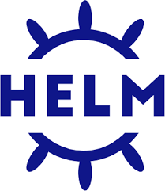
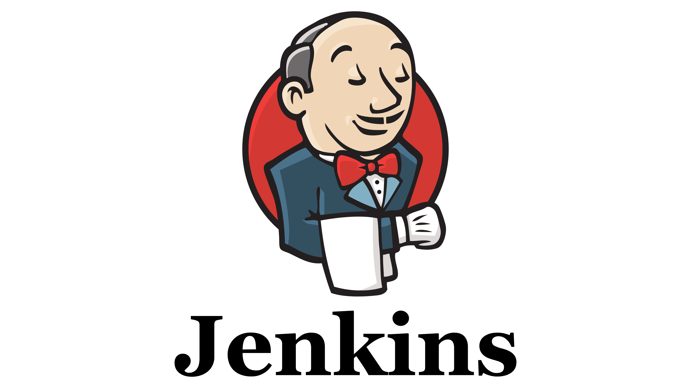
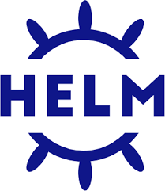
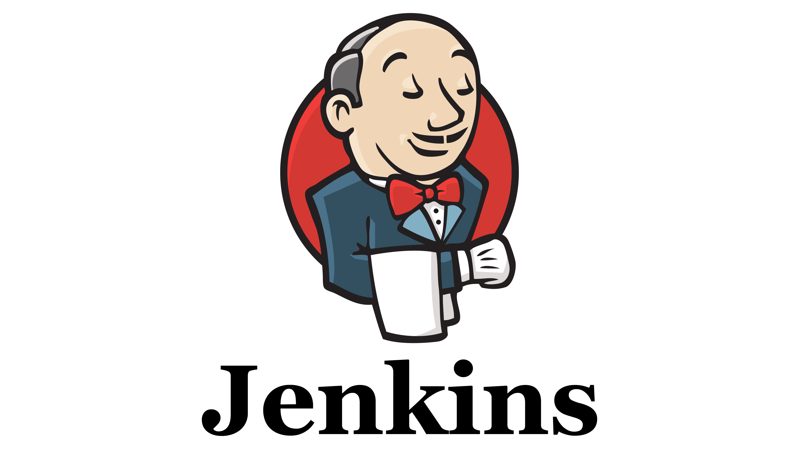
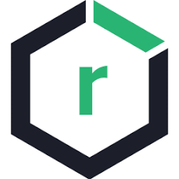
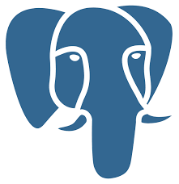
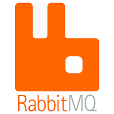
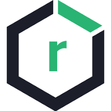
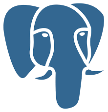
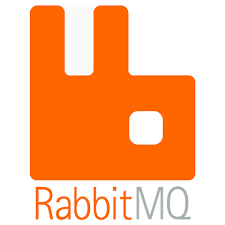

About Me

Hello, I am Suresh Nalajala
I am current Graduate student at the University of New Haven, majoring in Computer Science. Experienced DevOps specialist with a robust two-year tenure at Capgemini Technologies, adept in Kubernetes, AWS, Microsoft Azure, continuous integration (CI), continuous deployment (CD), Docker, and Linux.
Email: web@unh.newhaven.edu
Experience
Capgemini Technologies India Pvt Ltd
-
Facilitated client engagement by gathering requirements and translating them into user stories within the Jira board during sprint planning sessions.
-
Conducted thorough code reviews, ensuring the quality and alignment of pull requests with project standards and requirements, and providing timely approvals.
-
Implemented and optimized continuous integration and continuous deployment (CI/CD) pipelines, streamlining deployment processes and bolstering agility within the deployment lifecycle.
-
Spearheaded automation initiatives for key processes, significantly enhancing team efficiency and productivity while fostering a culture of ongoing enhancement and innovation.
Skills

 




 






Projects
Mobility Data Platform (MDP)
-
Implemented the Mobility Data Platform (MDP) for Alstom, a comprehensive solution hosted on Azure and managed through DevOps practices. This platform, designed to cater to the needs of Alstom end users, offers a fully automated environment comprising essential core components and customizable options to align with customer requirements.
-
Responsibilities encompassed developing and testing MDP components, utilizing technologies such as cert-manager, PostgreSQL, Minio, Grafana, Longhorn, Kibana, Kafka, Nifi, ActiveMQ, and RabbitMQ.
-
Managed Azure DevOps repository, reviewed and merged code pull requests, and maintained effective branching strategies. Executed deployments on both cloud and bare-metal servers, customized resource configurations, and conducted functional tests for critical components.
-
Demonstrated proficiency in Linux server administration, storage monitoring, and troubleshooting. Implemented detailed monitoring of Kubernetes resources using Grafana and provided customer support through the MDP support portal.
Microservices for Train Signaling
-
As a DevOps Engineer for the Microservices Application for Train Signaling project at Alstom, contributed to the development and deployment of Docker images for microservices within a Linux environment, utilizing advanced DevOps methodologies. Responsibilities included setting up CI/CD pipelines using Jenkins scripts, managing daily builds to Dev and QA environments, monitoring builds, and addressing issues as they arose.
-
Demonstrated proficiency in Linux server administration, including storage monitoring and issue resolution. Coordinated with development teams to synchronize code updates from GitHub for building Docker images.
-
Utilized Sonarqube for static analysis, facilitated microservices deployment using Helm charts, and managed Docker image storage using Nexus Artifactory. Automated manual tasks using scripts and scheduled them via Jenkins using Poll SCM.
-
Conducted detailed monitoring of Kubernetes resources using Grafana and played a key role in setting up Kubernetes clusters and creating manifest files for deployment, ensuring optimal service operation.
Education
University of New Haven
Lovely Professional University
Achievements
-
Outstanding Performer: I received this award for outstanding performance and lasting contribution in Q2 - 01st April 2022 to 30th June 2022 for Capgemini Engineering.
-
Outstanding Performer: I received this award for outstanding performance and lasting contribution in December 2021 for Capgemini Engineering India.